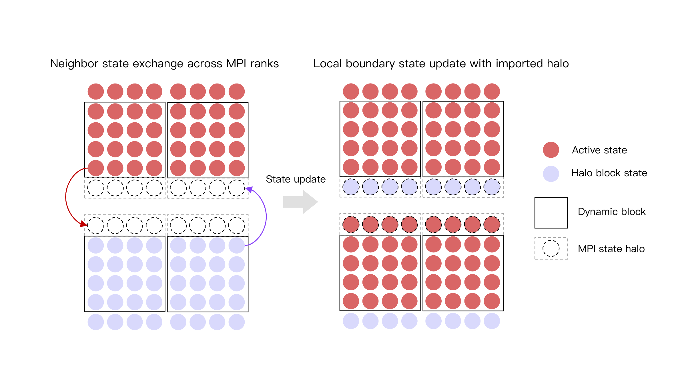

For larger PFC fields, I implemented a slab-decomposed workflow combining local cuFFT transforms with packing, MPI redistribution, and unpacking. This separates the local arithmetic from the data movement needed for a global transform. The workflow below retains the full FFT/IFFT and redistribution stages.

For sp-DBA, I also added exchanges of block-state metadata between neighboring ranks. These small state halos coordinate adaptive updates near slab boundaries; they serve a different purpose from the global redistribution required by the FFT.
